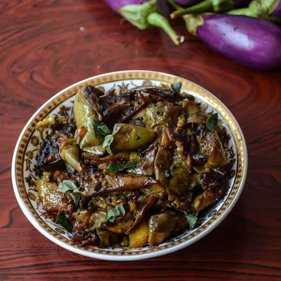

Telugu Ruchulu
తెలుగు రుచులు
Brinjal/
వంకాయ
Home Page
Click to change the language
తెలుగు కోసం క్లిక్ చేయండి
Ingredients:
2 medium-sized brinjals (eggplants), sliced
2 tbsp oil
½ tsp mustard seeds (optional)
½ tsp turmeric powder
1 tsp red chili powder (adjust to taste)
½ tsp cumin powder (optional)
Salt to taste
Curry leaves or coriander leaves (for garnish, optional)

Instructions:
1. Heat oil in a pan on medium heat. Add mustard seeds (if using) and let them splutter.
Add sliced brinjals and stir well. Cook on low-medium heat, stirring occasionally
Add turmeric, chili powder, cumin powder, and salt. Mix well to coat the brinjals evenly.
Cook uncovered for 8-10 minutes until the brinjals become soft and slightly crispy. Stir occasionally.
5. Garnish with curry leaves or coriander and serve hot!
Tip
కావలసినవిః
2 మధ్య తరహా వంకాయలు
2 టేబుల్ స్పూన్లు నూనె
½ స్పూన్ ఆవాలు (ఐచ్ఛికం)
½ స్పూన్ పసుపు పొడి
1 స్పూన్ ఎర్ర మిరప పొడి (రుచికి సర్దుబాటు చేయండి)
½ స్పూన్ జీలకర్ర పొడి (ఐచ్ఛికం)
రుచికి ఉప్పు
కరివేపాకు లేదా కొత్తిమీర ఆకులు (అలంకరణ కోసం, ఐచ్ఛికం)
మీడియం వేడి మీద బాణలిలో నూనె వేడి చేయండి. ఆవాలు వేసి (ఉపయోగిస్తే) మరియు వాటిని చిందరవందరగా ఉంచండి
వంకాయ ముక్కలు వేసి బాగా కలపాలి. తక్కువ-మీడియం వేడి మీద ఉడికించాలి, అప్పుడప్పుడు కదిలించు
.పసుపు, కారం, జీలకర్ర, ఉప్పు వేసి కలపాలి. వంకాయలను సమానంగా కోట్ చేయడానికి బాగా కలపండి
వంకాయలు మెత్తగా మరియు కొద్దిగా క్రిస్పీగా మారే వరకు 8-10 నిమిషాలు మూత లేకుండా ఉడికించాలి. అప్పుడప్పుడు కదిలించు.
కరివేపాకు లేదా కొత్తిమీరతో గార్నిష్ చేసి వేడిగా సర్వ్ చేయండి!
చిట్కా